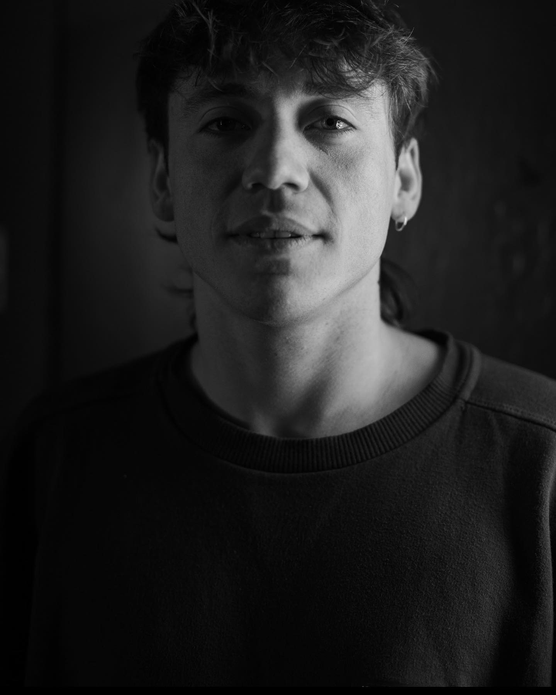

"Yo soy famoso gracias a mamá y papá:
Me trataron siempre como una estrella"
Paulo Ezequiel Londra Farías
Destacado cantante, rapero y compositor argentino nacido el 12 de abril de 1998 en Córdoba, inicio su carrera en 2017 cuando lanzó su primer sencillo "Relax", que lo catapultó al éxito en el genero del trap. Reconocido por su estilo que evita de temas violentos o relacionados con las drogas en sus canciones. A lo largo de su carrera, Paulo ha consolidado su posición como referente en la escena musical con éxitos como "Nena Maldición" y "Adán y Eva".
Noticias destacadas
El león está de vuelta

Escucha la Bzrp Session más esperada